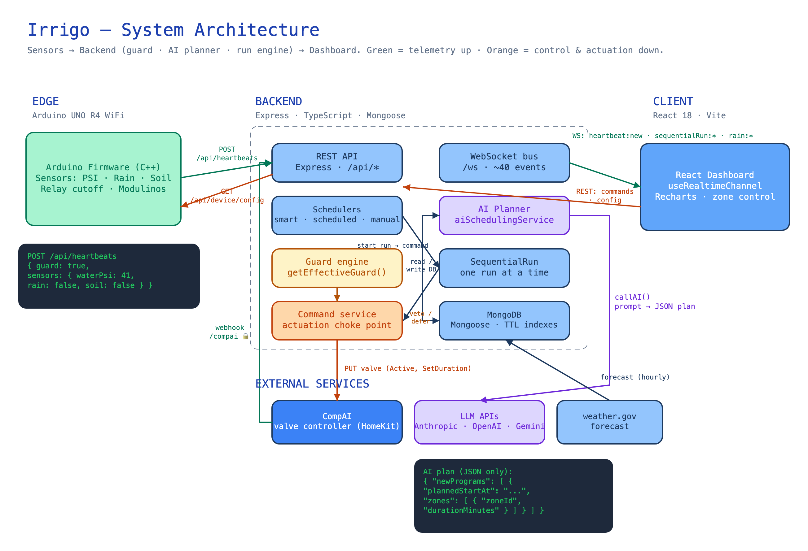
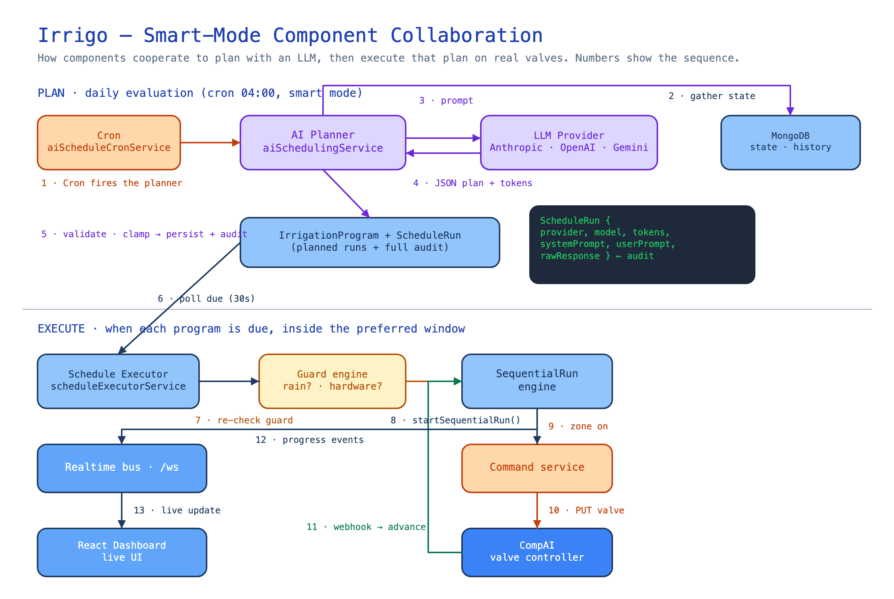

Irrigo is a smart-irrigation platform where a Large Language Model plans the watering schedule.
Physical sensors on an Arduino read water pressure, rain, and soil moisture; a TypeScript backend tracks every event, protects the lawn with deterministic guards, and — once a day — hands the full situational picture to an LLM that returns a structured irrigation plan the system then executes on real hardware.
This is an interview walkthrough. It starts at the highest level — what the system is and how the pieces fit — and then drills into the part that matters most for an LLM-integration role: how a non-deterministic model is wired safely into a system that turns real valves on and off.
Monitors sensors in real time, decides when it is safe to water, and executes multi-zone irrigation runs — manually, on a cron schedule, or from an AI-generated plan.
Scheduling is a fuzzy, many-variable judgement call — weather, soil, recent history, plant needs. A model reasons over all of it in one shot and returns a plan; code enforces the hard limits.
The model can be wrong, slow, or adversarially steered. Everything interesting is in the guardrails: validation, bounds enforcement, deterministic overrides, and a full audit trail.
The one-line pitch: "Irrigo is a real, physically-actuating system where an LLM has authority — bounded by deterministic code — over hardware. It's a small system, but it hits every hard LLM-integration problem: provider abstraction, structured output, validation, prompt injection, cost, latency, and human-in-the-loop safety."
System architecture
Four cooperating tiers. Data flows up from hardware to the UI; control flows down from schedulers and the AI planner back to the valves — through one choke point.


Both diagrams are editable Excalidraw source (open at excalidraw.com or the Excalidraw VS Code extension). The CSS diagram below is an interactive, theme-aware alternate of the same architecture.
Tech stack, by layer
| Layer | Technology | Notable choices |
|---|---|---|
| IoT firmware | Arduino UNO R4 WiFi · C++ | Pushes HTTP heartbeats; polls device config for remote control |
| Backend | Node.js 20 · Express 4 · TypeScript 5 · Mongoose 7 | Zod validation · ws WebSockets · Jest + ts-jest |
| Database | MongoDB | Discriminator-based configs collection · TTL retention indexes |
| Frontend | React 18 · Vite 7 · TypeScript | No Redux — local hooks + one theme context · Recharts · react-router 7 |
| AI | @anthropic-ai/sdk · openai · @google/generative-ai | Three SDKs behind one callAI() abstraction |
| Infra | Docker Compose · Nginx | Single-process backend (important — see Reliability) |
Despite the name, CompAI is a HomeKit-style smart-home device bridge — it exposes HomeKit valve characteristics (Active, SetDuration, RemainingDuration) over plain HTTP + signed webhooks. It is the source of truth for physical valve state, but contains no model calls. The only real LLM in the system is the scheduler. Worth pre-empting in the interview so it doesn't confuse the story.
Entry points
Anything that can put data into the system or make it act. Grouping them this way is also how you start a threat model — every entry point is an attack surface.
1 · Device heartbeats
POST /api/heartbeats — the Arduino posts sensor readings (~60s). This drives the guard state, deferral logic, and realtime fan-out. Validated with Zod.
2 · CompAI webhook
POST /api/webhook/compai — the valve controller reports state changes (valve on/off, remaining time). The only HMAC-authenticated endpoint.
3 · Dashboard REST
The React app drives ~80 REST endpoints — zone control, manual runs, program CRUD, settings, and AI config. Plain fetch + JSON.
4 · WebSocket /ws
Server → client broadcast bus. On connect the client gets connection:ready, then a stream of ~40 typed domain events. When live, polling suspends.
5 · Schedulers (cron)
Three setInterval pollers (30s) with timezone-aware cron matching trigger scheduled programs, execute AI plans, and fire the daily AI evaluation.
6 · Debug router
/api/debug/* can simulate webhook events and characteristics without hardware — powerful, and (like everything) unauthenticated. A talking point for the security section.
The full REST surface, by domain
| Base path | Purpose | Representative endpoints |
|---|---|---|
/api/heartbeats | Device telemetry + analytics | POST ingest · GET /series · GET /overview |
/api/status | Live system status | GET / · GET /snapshot (bootstrap/reconnect) |
/api/zones | Zone CRUD + control | POST /:id/command · GET /states · PUT /reorder |
/api/manual-run | Run all zones now | POST / · DEL / · GET /status |
/api/programs | Scheduled + AI programs | POST /:id/run · POST /:id/defer |
/api/ai-schedule | AI config, runs, entries | PUT /config · POST /run · GET /runs/:id |
/api/irrigation-settings | Windows, water-saving, rain | POST /confirm-rain · POST /clear-rain-pause |
/api/compai | Controller config + webhook | POST /webhook/compai 🔒 · GET /services |
/api/weather | Forecast cache | GET /forecast |
/ws | Realtime stream | WS server→client broadcast |
🔒 = authenticated (HMAC signature). Everything else is open on the LAN — see Security.
Domain & data model
Three concepts do most of the work: the SequentialRun execution engine, the guard that decides when it is safe to water, and the three mutually-exclusive modes that decide who is in charge.
The SequentialRun engine — one run at a time
Every watering job — manual, scheduled, or AI-planned — becomes a SequentialRun: an ordered list of zones, each watered for a duration, never concurrently (water pressure is shared). A module-level singleton enforces exactly one active run per process.
MIN_LEGIT_RUNTIME are treated as controller startup echoes, not a real stop.accumulatedMs — on resume only the remainder runs.cleanupOrphanedRuns() fails any run left running after a restart.The guard — deterministic "don't water now"
getEffectiveGuard() is the single source of truth, OR-ing two layers:
Hardware guard
- A boolean on the latest heartbeat
- Physical low-pressure / gate sensor
- Mid-run, an intelligent twist: a pressure dip after a zone starts is attributed to that zone (it may just be a slow valve), confirmed via a forced heartbeat 60s later before deferring.
Software guard — rain pause
- Rain/soil sensor reading, or a user-confirmed rain report
- Inside a configurable window (default 48h)
- User-confirmed intensity scales the window: light ×0.25, moderate ×0.5, heavy ×1.0
- Proactively cancels AI/scheduled runs that fall inside the pause.
The guard is deterministic code that outranks the model. The AI proposes a plan, but the guard (and the executor's re-check at run time) can veto or defer it. This is the core pattern: an LLM inside a deterministic safety envelope.
Three modes decide who's in charge
No schedulers run. The user triggers runs by hand. Manual commands even bypass the guard by design.
Classic cron programs fire on their scheduleCron, applying the water-saving factor and guard checks.
The AI planner owns scheduling. A cron triggers a daily evaluation; the executor runs the plan it produced.
Switching modes swaps the running schedulers at runtime via applyModeServices(mode).
Key collections
| Model | Role | Notes |
|---|---|---|
Heartbeat | Device telemetry | guard, sensors {psi, rain, soil}, temp, humidity · TTL 90d |
Zone | An irrigation zone | durations, plant/sun/soil metadata, CompAI characteristic map |
SequentialRun | Live/historical run | ordered zones, accumulatedMs, defer fields |
IrrigationProgram | A plan to water | source manual/ai-schedule · plannedStartAt · aiReasoning |
ScheduleRun | One AI evaluation | provider, model, tokens, full prompt + raw response (audit) |
IrrigationCommand | On/off sent to hardware | status pending→sent→acknowledged/timeout · TTL |
configs collection uses a Mongoose discriminator: SystemConfig, IrrigationSettings, AIScheduleConfig, CompAIConfig, DeviceConfig, DebugConfig. | ||
LLM integration — deep dive
One narrow, well-contained integration: a daily AI irrigation planner. It gathers the full picture, builds a structured prompt, calls one of three providers, and parses a JSON plan back — which deterministic code then validates and executes.
The provider abstraction
A single function hides three SDKs behind one interface. Adding a provider is a new case; nothing upstream changes.
// aiProviderService.ts — one entry point, three SDKs export async function callAI(provider, modelId, apiKey, systemPrompt, userPrompt) : Promise<AICallResult> { switch (provider) { case "anthropic": return callAnthropic(...); // messages.create, max_tokens 4096 case "openai": return callOpenAI(...); // chat.completions.create case "google": return callGoogle(...); // generateContent + systemInstruction } } // Returns a normalized shape regardless of provider: interface AICallResult { text: string; promptTokens: number; completionTokens: number; }
Provider, model, and API key are per-install configuration in the database, not hard-coded. The same code path serves Claude, GPT, or Gemini — the abstraction is the interface (system prompt + user prompt → text + token usage), which is the lowest common denominator all three share.
The scheduling pipeline
Step 2 — the prompt is a live document
The system prompt pins the contract; the user prompt is assembled from real state. Note the two injected sections — userContext (free text) and per-zone metadata — which are also the prompt-injection surface (see Considerations).
// System prompt (excerpt) "You are an irrigation scheduling assistant. Respond with valid JSON only, matching this schema: { newPrograms: [...], modifyPrograms: [...], cancelPrograms: [...], skippedZones: [...], summary: string }." // If a rain pause is active, a hard override is injected: "A rain pause is ACTIVE. Return all-empty program arrays and cancel everything pending." // User prompt is templated markdown: ## Current Conditions // rain, soil, temp, humidity from latest heartbeat ## Rain Forecast // periods above rainThresholdPercent ## Irrigation History // recent runs per zone ## Zones // name + metadata (plant, sun, soil, area) ## Additional Instructions ${config.userContext} // ⚠ raw user free-text, injected verbatim
Step 4–5 — parse, validate, then bound
// Response is extracted with a greedy JSON match, then structurally checked const match = raw.match(/\{[\s\S]*\}/); // first { … last } const plan = JSON.parse(match[0]); // throws → run fails cleanly // Each new program is validated: name, plannedStartAt parses, zones[] shape… // Then deterministic guardrails BEFORE any DB write: if (program.plannedStartAt <= now) discard(program); // no past/immediate runs duration = clamp(ai.durationMinutes, 1, zone.maxDurationMinutes); // executor bounds AI output if (!knownZone(zoneId)) drop(zoneId); // executor drops hallucinated zones
End-to-end sequence
Auditability
Every evaluation writes a ScheduleRun record capturing the provider, model, token counts, the exact system + user prompt, the raw response, and the request params. The dashboard surfaces this in an "AI Interaction" modal. When the AI does something surprising, you can see precisely what it was told and what it said.
What integrating an LLM actually forces you to solve
This is the section the interviewer is really asking about. Each item below is a real design decision in Irrigo — some solved well, some honest gaps. Naming the gaps is the point: it shows you know the full problem, not just the happy path.
Structured output & validation
The model is told "JSON only" with an embedded schema, and the response is never trusted: extract → JSON.parse → structural checks → typed field validation. A malformed response fails the run cleanly rather than corrupting state.
Determinism around non-determinism
Hard limits live in code, not the prompt: past-dated programs are discarded, durations are clamped to each zone's max, unknown zone IDs are dropped, and an active rain pause forces an all-cancel. The model advises; code decides.
Provider abstraction & portability
One callAI() interface over Anthropic / OpenAI / Google. Provider + model are config, so you can switch on price, latency, or availability without touching the planner.
Auditability & cost tracking
Full prompt + response + token counts are persisted per run. That is your debugging tool, your cost meter, and your evaluation dataset all at once.
Human-in-the-loop
AI-planned runs are visible in the queue and can be skipped, deferred, or rescheduled before they fire. A user's rain confirmation is a first-class signal that overrides the plan.
Prompt injection surface
userContext and zone name/metadata are interpolated raw into the prompt. Bounded impact (output is still validated), but a crafted zone name could try to steer the model. Fix: delimit + label untrusted spans, keep authority in the schema, not the prose.
Latency, timeouts & retries
The LLM call has no abort timeout or retry/backoff (unlike the CompAI HTTP calls, which do). A hung provider hangs the run. Fix: AbortController deadline + bounded retry + a single "repair" re-prompt on invalid JSON.
Output bounds vs. schema trust
Some bounds are enforced only at the executor, not at parse time — e.g. duration clamping happens later. Pulling all bounds into one validation layer (ideally a Zod schema on the response) would make the safety envelope obvious and testable.
Secrets at rest
Provider API keys live in MongoDB in plaintext (masked at the API boundary, never overwritten by the mask). Fine for a single-tenant home box; needs envelope encryption or a secrets manager for multi-tenant.
Treat the LLM as an untrusted, occasionally-unavailable microservice that returns advice. Everything follows: validate its output like a network boundary, wrap it in timeouts and fallbacks, keep hard constraints in deterministic code, log every interaction, and give humans a veto. Irrigo is a compact worked example of exactly that discipline.
If I were hardening this for production
- Wrap
callAIin anAbortControllerdeadline + exponential-backoff retry, with a deterministic fallback plan (repeat yesterday, or skip) when the model is unavailable. - Replace hand-rolled parsing with a Zod schema on the response and a single repair re-prompt; reject anything that fails, and enforce all bounds (duration, zone IDs, daily total) in that one layer.
- Isolate untrusted input: wrap
userContextand zone metadata in clearly-delimited, labeled blocks and instruct the model that only the schema governs actions. - Add an eval harness over the persisted
ScheduleRuncorpus — replay historical conditions, assert the plan respects windows, budgets, and rain pauses. Turns "it seemed fine" into a regression test. - Track token cost per run against a budget; alert on drift when models or prompts change.
Security & threat model
Candor is the flex here. Irrigo is a single-tenant LAN appliance — appropriate for a home network behind a router, with essentially no application-layer access control. Knowing exactly where the gaps are (and what they'd take to close) is more impressive than pretending they aren't there.
| Control | Status | Detail & remediation |
|---|---|---|
| Authentication / authZ | Absent | No auth on any endpoint — including POST /manual-run, zone on/off, config, and POST /heartbeats (forge a heartbeat → flip the guard). Anyone who can reach the port can run water. Fix: a reverse-proxy auth layer or app-level session/JWT + RBAC. |
| Webhook verification | Fail-open | The CompAI webhook does proper HMAC-SHA256 with constant-time compare — but only if a secret is configured; unset ⇒ it accepts unauthenticated calls. Since the webhook drives valve state, spoofing is possible when unconfigured. Fix: fail-closed; require a secret. |
| Input validation | Partial | Zod schemas on ~11 route groups via middleware; Mongoose schema backstop. Gaps: the CompAI config PUT skips the middleware; the webhook returns 200 even on invalid payloads. |
| CORS | Open | app.use(cors()) with defaults — all origins. Fix: explicit allowlist. |
| Rate limiting | Absent | No throttling on public ingest/webhook endpoints. Fix: express-rate-limit per route. |
| Secrets at rest | Plaintext | CompAI tokens, webhook secret, and LLM API keys stored plaintext in Mongo (masked on read). Mongo connection itself is unauthenticated. Fix: encryption at rest + DB auth. |
| Prompt injection | Surface | Raw user/zone text in the prompt (see LLM Considerations). Bounded by output validation. Fix: delimit untrusted input; authority in schema. |
| Security headers | Absent | No helmet. Fix: add standard headers at the proxy or app. |
| Error handling / leakage | Moderate | Controllers return generic messages; verbose logging is opt-in and off in prod. No global error handler (per-controller try/catch). |
(1) Zero auth on control endpoints. (2) Webhook HMAC fails open. (3) Open CORS + no rate limiting. (4) Plaintext secrets + unauthenticated Mongo. (5) Single-process in-memory state — a correctness constraint, not just a scaling one. Framed as a deliberate scope choice for a home LAN with a clear path to hardening, this reads as maturity.
Realtime & reliability
The dashboard feels live because the backend is an event bus; the whole thing stays consistent because a few deliberate constraints keep concurrency simple.
The realtime bus
A single ws server on /ws broadcasts ~40 typed domain events to every connected client — no rooms, no per-client filtering. The React useRealtimeChannel hook manages reconnection (exponential backoff 1s → 10min, visibility-aware) and, while connected, suspends polling. On reconnect the client re-bootstraps from GET /api/status/snapshot.
The bus is push-only; the server ignores inbound messages. Control still goes through REST, keeping the mutation path validated and singular.
A composite snapshot endpoint rebuilds full client state in one call — and opportunistically self-heals orphaned runs it finds.
Ping loop keeps NAT/proxy connections warm; the client is resilient to drops without losing state.
Reliability by constraint
Single active run, single process
activeRun, guard-deferral bookkeeping, and auto-off timers are in-memory module singletons. This makes concurrency trivial to reason about — and means the system assumes exactly one backend process. Horizontal scaling would break the guarantees. That's a conscious trade for a home appliance.
Crash recovery & retention
On boot, orphaned runs are reconciled to failed; the snapshot endpoint heals lazily too. MongoDB TTL indexes auto-purge heartbeats, commands, events, and webhook logs (heartbeats at 90 days) so the DB stays bounded with zero cron jobs.
"How would you scale this to N houses?" → move the in-memory run state to the DB with a lease/lock, make schedulers leader-elected (or a queue like BullMQ), and shard by device. The single-process design isn't naïveté — it's the right call for one lawn, and the migration path is clear.
Interview talking points
Likely questions and the crisp answer for each. The through-line: an LLM given real authority, made safe by deterministic engineering.
"Walk me through the architecture."
Four tiers — Arduino edge, TypeScript backend, React client, external services. Data flows up via heartbeats, control flows down through one command service to the CompAI valve controller. Realtime over WebSocket; persistence in MongoDB.
"Where and why is the LLM?"
A daily scheduler. Watering is a fuzzy multi-variable judgement (weather, soil, history, plant needs). The model reasons over the whole picture and returns a structured plan; code enforces the hard limits. It's advisory authority inside a deterministic envelope.
"How do you trust the model's output?"
I don't — I treat it like an untrusted network boundary. JSON-only contract, extract + parse + structural + typed validation, then deterministic guardrails: drop past-dated runs, clamp durations to zone max, drop unknown zones, and let an active rain pause force an all-cancel.
"What about prompt injection?"
There's a real surface — user context and zone names are interpolated raw. Impact is bounded because output is validated, but the fix is to delimit and label untrusted spans and keep all authority in the schema, never the prose. I'd rather name it than hide it.
"Multiple providers — why?"
One callAI() interface over Anthropic, OpenAI, and Gemini; provider and model are per-install config. It lets you switch on cost, latency, or availability, and the interface is the shared lowest common denominator: prompts in, text + token usage out.
"How do you debug a bad AI decision?"
Every evaluation persists a ScheduleRun with the exact prompt, raw response, model, and token counts, surfaced in an AI Interaction modal. That record is simultaneously the debugger, the cost meter, and the seed of an eval dataset.
"What would you fix first?"
Add a timeout + retry + deterministic fallback around the model call, move response validation into a single Zod schema with all bounds, and build an eval harness over historical runs. Then auth, because right now the system is open on the LAN.
"How would you scale it?"
Move in-memory run state into the DB behind a lease, make schedulers leader-elected or queue-backed, shard by device. The single-process design is deliberate for one lawn; the path off it is well-defined.
Built as an interview companion for the Irrigo codebase. Every claim here maps to real files — aiSchedulingService.ts, aiProviderService.ts, guardService.ts, sequentialRunService.ts, verifyHmacSignature.ts — so you can open the source live if asked.